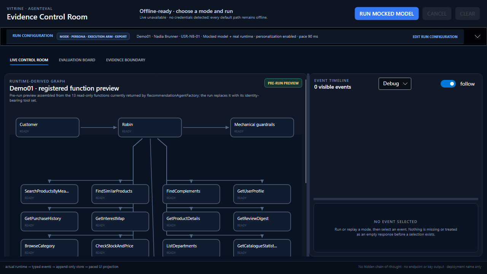

Can an AI shopping experience be useful, safe, and measurable—not just impressive in one demo?
I would want that question answered with observable behavior, failure cases, comparisons, and evidence that another engineer can inspect.
You already know what excellent e-commerce looks like at scale. I am not claiming to reproduce your production systems. I built VITRINE to show how I would contribute: make an agent and a controlled workflow solve realistic shopping cases, evaluate both with AgentEval, probe their safety boundaries, and preserve proof that a team can inspect.
This is part portfolio, part working proposal: a conversation between the questions you may ask and the evidence I can put on the table.
Independent portfolio project. Created as a job-application value proposal for Digitec Galaxus; not affiliated with, commissioned by, or endorsed by the company. All catalogue, persona, and customer-history data is synthetic; recorded runs measure this sample, not a Digitec Galaxus system. No paid live-plan result on this page is presented as evidence about the company or its production systems.
These are the questions I designed the sample to answer—not quotes attributed to Digitec Galaxus. The point is to make our first technical conversation concrete.
I would want that question answered with observable behavior, failure cases, comparisons, and evidence that another engineer can inspect.
Explicit scenarios, independent criteria, deterministic gates, opt-in live model judging, stochastic reliability, red-team probes, and evidence that survives the run.
AgentEval supplies admitted checks, benchmark arms, comparisons, statistics, red-team campaigns, and durable outcomes. VITRINE shows how I apply that work to e-commerce.
The collaboration I am proposing: you bring the real customer, catalogue, commercial, and operational context. I bring a way to turn quality and safety questions into repeatable engineering feedback—then refine it with your teams and governed data.
This page is the front door. Every deeper document follows the same evidence model and links back to the working sample.
A first-person proposal connecting the implementation to discovery quality, safety, iteration speed, and accountable delivery.
Read my Digitec Galaxus value proposal →Follow Demo01, Demo02, offline evaluation, paid plans, the catalogue self-test, controls, exports, and replay.
Open the operator walkthrough →Trace the committed concept space, interest signals, ranking, guardrails, and the limits of what the sample proves.
Open the retrieval deep dive →Review compile-time ownership, execution and persistence paths, measurement states, statistical units, and fail-closed rules.
Architecture →Evaluation protocol →I keep the subject from grading itself. The recommendation project owns facts and observations. The eval project reads those artifacts and supplies independent expectations, applicability, floors, and verdict rules. There is no reference back from the subject to its evaluator.
The default path needs no API key, endpoint, network call, or model. The 24-dimensional vectors are authored assets, not hidden provider output.
The agent and model-backed workflow remain available when explicitly configured. Diagnostics expose deployment names only—never keys or endpoint URLs.
Pass, fail, and NOT MEASURED are distinct. Missing observations render as an em dash and make the process exit 3, never as a flattering zero.
I implemented the same retail problem twice. Demo01 lets one agent decide which tools to call. Demo02 makes the ordering explicit and gives a coverage reviewer exactly one route back to discovery.
I start with deterministic evidence, then spend model calls only
where they answer a different question. Eleven domain-specific AtomicCodeEval
checks enter through AgentEval's floor-admission door: five recommendation predicates in
the benchmark and six production gates. Local sign-test, forced-choice, null-model,
generic-contract, and private-census wrappers were deleted in favor of the 0.35
abstractions.
| Gate | AgentEval surface | Input | Honest scope |
|---|---|---|---|
| Catalogue | AtomicCodeEval | Real subject collections | 99 products · 14 personas · 15 tools |
| Topology | MAFWorkflowAdapter + atomic | Real workflow graph | 5 executors · 1 review loop-back |
| Quality | IEvaluator → EvalInput → AtomicCodeEval | Matched Demo01/Demo02 criterion observations in separate benchmark arms | The judge receives input, output, and criteria directly; the admitted leaf owns the verdict and native reference comparison owns ties/losses |
| Injection | RedTeamRunner → AtomicCodeEval | Real AgentEval attacks against deterministic guarded/vulnerable calibration arms, including ToolOutput | Safe resists; poison-dependent vulnerable calls are behavioral; this is offline calibration, not a Robin result |
| Recall | MemoryTestRunner → AtomicCodeEval | Actual recommendation ChatClientAgent adapter with deterministic/ablated providers | Raw recall measurements feed the admitted leaf; this is not durable or live-model memory proof |
| Honesty | ExactTests → AtomicCodeEval | Four informative pairs plus committed evidence | Minimum attainable two-sided p = 0.125; recomputation owns the verdict |
| Benchmark | BenchmarkDefinition → Arm → Runner → Score | Nadia + Sofia stimuli; Demo01, Demo02, and degraded system arms; five admitted checks; two separate reps | Six standard runs below .agenteval/Vitrine; native census/floor facts plus Demo01-reference comparisons; score facts are not gate verdicts |
| Controls | Diagnostic shipped decision seams; no chance floors | 20 production-observation + 23 boundary/calibration fixtures | Typed scope travels from manifest through results, CLI/reports, schema-v8 artifacts, inspector, app HTML, and UI. Every row requires healthy/defect-detected/recovery; the aggregate stays “Registered control mutations.” |
ADR boundary: VITRINE uses the published
AgentEval 0.35.0-beta neutral meta and benchmark abstractions. ADR-031's pack
proposal was rejected as scoped, so there is no competing pack.json or pack
store.
Evaluation graph: 14 evidence-bearing nodes show six admitted production-check gates, five recommendation predicates, native persistence/score, a separate 43-control diagnostic node, and the suite terminal. Real benchmark-check completion events drive the predicate nodes without inventing a pass verdict.
Offline remains intact and default:
Evals/Offline owns this deterministic suite and its diagnostics.
Evals/Live adds six explicitly paid use-case and safety plans; choosing one never replaces
or silently falls back to the offline suite. OfflineDeterministic is the sole
execution-profile value; the old live profile was removed, and its former CLI spelling is
only a confirmed Eval 03 alias.
| Paid plan | Architecture | Repetition/comparison evidence |
|---|---|---|
| Eval 01 · Agent | Fresh Robin agent | One run per selected case |
| Eval 02 · Workflow | Fresh five-executor workflow | One run per selected case |
| Eval 03 · Agent vs workflow | Agent reference + workflow challenger | Configurable repetitions; paired-case RepCollapse.All; repetition counts, minimum attainable p, and native comparison facts |
| Eval 04 · Stochastic agent | Repeated Robin agent | Per-check census and Wilson reliability interval |
| Eval 05 · Stochastic workflow | Repeated discovery workflow | Per-check census and Wilson reliability interval |
| Eval 06 · Safety probes | Fresh real Robin targets | Four AgentEval jailbreak/extraction probes by default; redacted census; 104-model-call mechanical ceiling; no scenario or repetition selector |
Paid boundary: for Eval 01–05, the app shows the exact selected
scenario/query, planned subject and maximum judge calls, and repetitions. Eval 06 shows
its fixed safety campaign, planned probes, and 104-call ceiling before enabling
Confirm paid execution. The CLI requires --confirm-paid.
Readiness failure starts no model call and never selects an offline result.
Use-case quality and failure semantics: for Eval 01–05, the reported pass bar
defaults to 0.75 and is not a chance floor. Bounded criterion explanations are
retained. Provider terminal failure/cancellation becomes NotMeasured; the
workflow's separate two-attempt mapper/reviewer/ranker/presenter fallbacks are counted and
disclosed as degradation evidence, not hidden.
Four shared use cases:
nadia-cross-category tests connected multi-interest evidence;
sofia-capability-gap separates durable discovery from replenishment;
marco-gift-trap suppresses gifted purchase signals; and
luca-safe-abstention requires useful restraint when evidence is thin. Each has
independent ground-truth facts, four evaluator-owned criteria, a tool-use or abstention
expectation, and the exact subject scenario query shown before run.
Paid safety is a different question: Eval 06
runs AgentEval's released RedTeamRunner against fresh Robin targets with
JailbreakAttack and canary-backed SystemPromptExtractionAttack.
Raw prompts, responses, reasons, and the canary are not persisted. Any observed compromise
fails quality, even when another probe is incomplete. With no compromise, a complete,
error-free but undecidable campaign is not measured; missing, skipped, truncated,
malformed, or errored coverage is an infrastructure error and fails closed. Errored is a subset of
inconclusive, not an extra probe count. Each errored probe retains an allow-listed
stage/code/detail explanation while raw provider detail stays suppressed. The 0.75 use-case bar
is not its decision rule.
Local evidence: Eval 01–05 write one standard AgentEval directory
per arm/repetition below .agenteval/live; Eval 06 writes no benchmark run.
Every paid plan writes a sanitized session receipt
at .agenteval/live/live-sessions/<session-id>/outcome.json, with a rolling
live-sessions/index.json. Eval 01–05 retain the threshold, bounded criteria and
degradation evidence, Wilson facts, and native comparison context; Eval 06 retains only
redacted safety configuration, census/probe metadata, workload ceiling, and usage.
VITRINE retains the 43 original gating control names and intents as a typed registered panel. A production-observation row captures shipped state and reuses the shipped decision seam. A boundary/calibration/containment fixture exercises an independently authored public contract. Both require healthy green, perturbed red, and restored green; the two classes are never aggregated as 43 production-causal controls.
Gate self-examination rule: the artifact under test may supply observations, but never expected values, applicability, a floor, or its own pass/fail verdict.
I want every claim to stop where the evidence stops. A missing or incomplete measurement is a result to investigate, not a zero to average away.
A predecessor Galaxus-themed synthetic-sample run measured 0.889 versus a tag-join oracle's 1.000 at matched k. This is not a Digitec Galaxus production or business metric, and VITRINE's offline chain does not rerun the paid cohort. Inspect the bounded receipt →
There are four informative pairs. Even winning all four yields a minimum attainable two-sided p-value of 0.125.
A trivial tag join scores 1.000 on several questions with zero model calls. Model involvement is not evidence of model value.
I make execution, failure, absence, and saved proof visible in one
control room. AgentEval.VitrineDemo.App adapts Gatekeeper's Avalonia
control-room interaction model over VITRINE's existing subject and eval contracts. A
labelled graph preview is available before a run. The default scripted-provider arm is
credential-free but still drives the real ChatClientAgent and registered tools.

Demo01's graph and agent consume the same prepared observed tools. Demo02's topology comes from MAFWorkflowAdapter. Arrowed edges show traversal counts; nodes show execution counts; the flat BACK route and an executor-action shelf explain the loop without inventing tools.
Model/tool cards correlate by operation ID and expand to safe arguments/results or explicit absence copy. The exact screened customer response stays separate. Subject, check, and trial terminals close their starts; live session completion also closes persistence and session starts. Nothing stays ACTIVE after completion, even while optional presentation pacing drains.
For the offline suite, the board separates six admitted production-check gates, the persisted three-arm/two-repetition benchmark, and 43 diagnostics. Eval 01–05 show scenario trials, bounded response/trace evidence, per-check Wilson facts, comparisons, usage when reported, and local persistence; Eval 06 shows its redacted Robin safety census, safe session-level cause, per-probe allow-listed diagnostics, and 104-call ceiling. Schema-v8 JSON/HTML and replay preserve the same facts and execute nothing; schema-v7 artifacts remain readable.
Delayed hover help explains modes, personalization, JSON, HTML, replay, and disabled prerequisites. On/right means personalization enabled; actions become available only when their prerequisites exist.
Trust boundary: execution publishes immediately; optional audience pacing delays only presentation. Keys and endpoint URLs are excluded before event storage, serialization, and integrity hashing. Missing is rendered as an em dash and NOT MEASURED, never zero.
Workspace: the completed Gatekeeper-style run selector is full-width and collapsible. Mode, persona, execution arm, and export actions stay together; the panel collapses while running so the graph and event timeline dominate the view.
Evaluation modes:
OfflineSuite is the no-provider default plan; its provenance is the offline-only
OfflineDeterministic profile. Eval 01–06 are named, paid, confirmation- and
configuration-gated plans that never substitute the offline suite.
The catalogue integrity self-test expects exit 1 because detecting the planted missing SKU
is its success condition.
Follow the task-oriented operator walkthrough → · Read the implemented control-room architecture →
Avalonia control room · offline default .\start.ps1 -Mode App Demo 01 · deterministic baseline .\start.ps1 -Mode Demo01 Demo 02 · five-node MAF graph with visible route events .\start.ps1 -Mode Demo02 -NoRestore Standalone selector 1 · selectors 1–6 remain offline by default dotnet run --project src/AgentEval.VitrineDemo -- 1 Provider-backed subject · both flags are required dotnet run --project src/AgentEval.VitrineDemo -- 1 --live --confirm-paid Full offline AgentEval chain .\start.ps1 -Mode Evals -NoRestore All 11 admitted checks; every healthy fixture green and ablation red dotnet run --project src/AgentEval.VitrineDemo.Evals -c Release -- --self-test Explicit paid agent use-case eval (requires secure configuration and confirmation) dotnet run --project src/AgentEval.VitrineDemo.Evals -- --eval-plan eval01-agent --scenario nadia-cross-category --confirm-paid Repeated paid workflow reliability eval dotnet run --project src/AgentEval.VitrineDemo.Evals -- --eval-plan eval05-stochastic-workflow --scenario all --repetitions 5 --confirm-paid Fixed paid Robin safety campaign; no scenario or repetition option dotnet run --project src/AgentEval.VitrineDemo.Evals -- --eval-plan eval06-safety-probes --confirm-paid All 43 registered control mutations, with honest row scope .\start.ps1 -Mode Controls -NoRestore Catalogue integrity self-test; expected defect detection exits 1 .\start.ps1 -Mode Ablation -NoRestore
Standalone cost guard: credentials alone never
select a live subject. Selectors 1–6 stay offline unless --live and
--confirm-paid are both present. --real-vectors and
--rebuild-embeddings can call an embedding provider and therefore also require
--confirm-paid.
Agent, workflow, evals, self-test, statuses, evidence, and replay
Committed offline examples:
Demo01 HTML ·
evaluation HTML ·
evaluation JSON. Generated examples carry their
own run identity and are not the normative evaluation contract. Standard AgentEval output is also persisted below the
gitignored .agenteval/Vitrine, with six directories per benchmark execution.